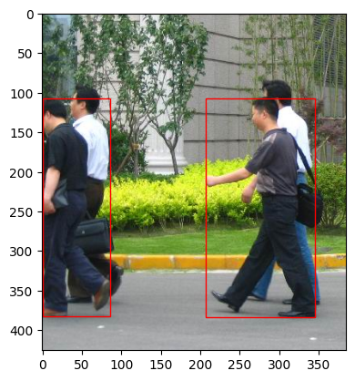
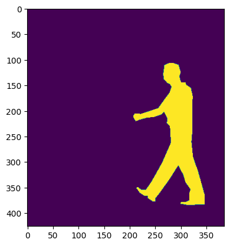
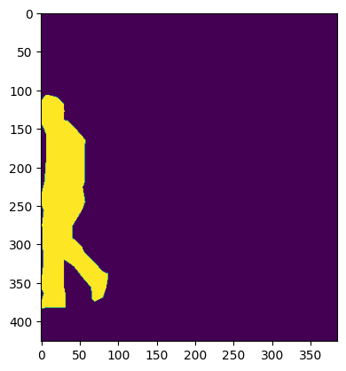

import torch
import torchvision
from pathlib import PathWe try to understand code provided in this tutorial
Create Dataset
The tutorial uses the PenFudan Pedestrian dataset with the aim of training an instance segmentation model on a custom dataset.
base_data = Path('/home/boi-doingthings/Documents/datasets/PennFudanPed')import os
for root, dirs, files in os.walk(base_data):
for d in dirs:
print(os.path.join(base_data, d) )
# for f in files[:5]:
# print(os.path.join(base_data,d, f))/home/boi-doingthings/Documents/datasets/PennFudanPed/PNGImages
/home/boi-doingthings/Documents/datasets/PennFudanPed/Annotation
/home/boi-doingthings/Documents/datasets/PennFudanPed/PedMasksfrom PIL import Image
import matplotlib.pyplot as plt
import matplotlib.patches as patches
from PIL import Image
import numpy as np
class PFP_dataset(torch.utils.data.Dataset):
def __init__(self,base_path,transforms):
self.base_path = base_path
self.transforms=transforms
self.imgs_list=list(sorted(os.listdir(base_path/"PNGImages/")))
self.mask_list=list(sorted(os.listdir(base_path/"PedMasks/")))
def __getitem__(self,idx):
img = os.path.join(self.base_path,"PNGImages",self.imgs_list[idx])
mask = os.path.join(self.base_path,"PedMasks",self.mask_list[idx])
img = Image.open(img).convert("RGB")
mask_img = Image.open(mask)
mask = Image.open(mask)
# convert the PIL Image into a numpy array
mask = np.array(mask)
obj_ids = np.unique(mask)
# first id is the background, so remove it
obj_ids = obj_ids[1:]
masks = mask == obj_ids[:,None,None] ## for comparing apples to apples i.e dimensionality
obj_count = len(obj_ids)
boxes = []
for i in obj_ids:
pos = np.where(masks[i-1]) # This returns the coordinates of where
xmin = np.min(pos[1])
xmax = np.max(pos[1])
ymin = np.min(pos[0])
ymax = np.max(pos[0])
boxes.append([xmin,ymin,xmax,ymax])
# convert everything into a torch.Tensor
boxes = torch.as_tensor(boxes, dtype=torch.float32)
# there is only one class
labels = torch.ones((obj_count,), dtype=torch.int64)
masks = torch.as_tensor(masks, dtype=torch.uint8)
image_id = torch.tensor([idx])
area = (boxes[:, 3] - boxes[:, 1]) * (boxes[:, 2] - boxes[:, 0])
# suppose all instances are not crowd
iscrowd = torch.zeros((obj_count,), dtype=torch.int64)
target = {}
target["boxes"] = boxes
target["labels"] = labels
target["masks"] = masks
target["image_id"] = image_id
target["area"] = area
target["iscrowd"] = iscrowd
if self.transforms is not None:
img, target = self.transforms(img, target)
return img, target
def __len__(self):
return len(self.imgs)
def visualize(self,idx):
# GET img and target
img,target = self.__getitem__(idx)
# Display the image
plt.imshow(img)
# Get current axis
ax = plt.gca()
# Create a Rectangle patch
for i in range(len(target['boxes'])):
o = target['boxes'][i].numpy()
rect = patches.Rectangle((o[0], o[1]), o[2]-o[0], o[3]-o[1], linewidth=1, edgecolor='r', facecolor='none')
# Add the patch to the Axes
ax.add_patch(rect)
plt.show()
def visualize_mask(self,idx):
# GET img and target
img,target = self.__getitem__(idx)
# Display the image
for i in range(len(target['masks'])):
plt.imshow(target['masks'][i].numpy())
plt.show()
a = PFP_dataset(base_data,None)a[5][1]['boxes'][0].numpy()array([207., 107., 345., 384.], dtype=float32)a.visualize(5)
a.visualize_mask(5)

Model
FinTuning
import torchvision
from torchvision.models.detection.faster_rcnn import FastRCNNPredictor
# load a model pre-trained on COCO
model = torchvision.models.detection.fasterrcnn_resnet50_fpn(weights="DEFAULT")
# replace the classifier with a new one, that has
# num_classes which is user-defined
num_classes = 2 # 1 class (person) + background
# get number of input features for the classifier
in_features = model.roi_heads.box_predictor.cls_score.in_features
# replace the pre-trained head with a new one
model.roi_heads.box_predictor = FastRCNNPredictor(in_features, num_classes)Downloading: "https://download.pytorch.org/models/fasterrcnn_resnet50_fpn_coco-258fb6c6.pth" to /home/boi-doingthings/.cache/torch/hub/checkpoints/fasterrcnn_resnet50_fpn_coco-258fb6c6.pthimport torchvision
from torchvision.models.detection.faster_rcnn import FastRCNNPredictor
from torchvision.models.detection.mask_rcnn import MaskRCNNPredictor
def get_model_instance_segmentation(num_classes):
# load an instance segmentation model pre-trained on COCO
model = torchvision.models.detection.maskrcnn_resnet50_fpn(weights="DEFAULT")
# get number of input features for the classifier
in_features = model.roi_heads.box_predictor.cls_score.in_features
# replace the pre-trained head with a new one
model.roi_heads.box_predictor = FastRCNNPredictor(in_features, num_classes)
# now get the number of input features for the mask classifier
in_features_mask = model.roi_heads.mask_predictor.conv5_mask.in_channels
hidden_layer = 256
# and replace the mask predictor with a new one
model.roi_heads.mask_predictor = MaskRCNNPredictor(in_features_mask,
hidden_layer,
num_classes)
return model